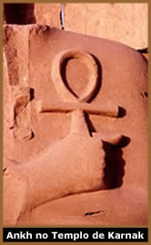
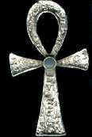

O
que é Ankh?
O Ankh é um símbolo que significa,
entre outros, a imortalidade. É encontrado nas gravuras
e hieróglifos a partir da 5ª Dinastia egípcia,
principalmente nos Templos de Luxor, Medinet Habu, Hatshepsut,
Karnak e Edfu. Além de obeliscos, túmulos e murais.
No
túmulo de Amenhotep II, vemos o Ankh sendo entregue ao
faraó por Osíris, concedendo a ele o dom da imortalidade,
ou o controle sobre os ciclos vitais da natureza, ou seja, o início
e fim da vida. Em algumas situações, é encontrado
próximo a boca das figuras dos deuses, neste caso significa
um Sopro de Vida. Na tumba de Tutankhamon, foi encontrado
um porta-espelho na forma de Ankh, já que a palavra egípcia
para espelho também é Ankh. Sua presença
também é marcante em objetos cotidianos, como colheres,
espelhos e cetros utilizados pelo povo do Egito.
No Ocidente, o Ankh é conhecido como Cruz
Egípcia ou Cruz Ansata. Esta segunda denominação
tem origem na palavra latina Ansa, que significa Asa. Além
destas, o encontramos como Chave do Nilo (ou da vida),
Cruz da Vida ou simplesmente Cruz Ankh.
Porém, a maioria dos conceitos ocidentais
não é correto, pois os egípcios da Antigüidade
desconheciam a fechadura. Portanto, não seria possível
associá-lo a uma chave.
Anatomia
A
forma do Ankh assemelha-se a uma cruz, com a haste superior vertical
substituída por uma alça ovalada. Em algumas representações
primitivas, possui suas extremidades superiores e inferiores bipartidas.
A alça oval que compõe o Ankh, sugere
um cordão entrelaçado com as duas pontas opostas
que significam os princípios feminino e masculino, fundamentais
para a criação da vida. Em outras interpretações,
representa a união entre as divindades Osíris e
Ísis, que proporcionava a cheia periódica do Nilo,
fundamental para a sobrevivência da civilização.
Neste caso, o ciclo previsível e inalterável das
águas era atribuído ao conceito de reencarnação,
uma das principais características da crença egípcia.
A linha vertical que desce exatamente do centro do laço,
é o ponto de intersecção dos pólos,
e representa o fruto da união entre os opostos.
Cultura
& Simbolismo
Apesar de sua origem egípcia, ao longo da
história o Ankh foi adotado por diversas culturas. Manteve
sua popularidade, mesmo após a cristianização
do povo egípcio a partir do século III. Os egípcios
convertidos ficaram conhecidos como Cristãos Cópticos,
e o Ankh (por sua semelhança a cruz utilizada pelos cristãos)
manteve-se como um de seus principais símbolos, chamado
de Cruz Cóptica.
No final do século XIX, o Ankh foi agregado
pelos movimentos ocultistas que se propagavam; além de
alguns grupos esotéricos e as tribos hippies do final da
década de 60. É utilizado por bruxos contemporâneos
em rituais que envolvem saúde, fertilidade e divinação;
ou como um amuleto protetor de quem o carrega. O Ankh também
foi incluído na simbologia da Ordem Rosa-Cruz, representando
a união entre o reino do céu e a terra. Em outras
situações, está associado aos Vampiros, em
mais uma atribuição à longevidade e imortalidade.
Ainda encontra-se como uma alusão ao nascente-poente do
Sol, simbolizando novamente, o ciclo vital da natureza.
O
Ankh se popularizou no Brasil no início dos anos 70, quando
Raul Seixas e Paulo Coelho (entre outros) criaram a Sociedade
Alternativa. O selo desta sociedade, possuía um Ankh adaptado
com dois degraus na haste inferior, simbolizando os Degraus da
Iniciação, ou a chave que abre todas as portas.
Numa outra interpretação, representa o laço
da sandália do peregrino, ou seja, aquele que quer caminhar,
aprender e evoluir.
Na cultura pop, ele foi associado pela primeira
vez ao vampirismo e a subcultura gótica através
do filme The Hunger - Fome de Viver (1983), em que David Bowie
e Catarine Deneuve protagonizam vampiros em busca de sangue. Há
uma cena em que a dupla, usando Ankhs egípcios, está
à espreita de suas presas numa casa noturna ao som de Bela
Lugosi is Dead, do Bauhaus. Assim, elementos como a figura do
vampiro, o Ankh e a banda Bauhaus, podem atuar num mesmo contexto;
neste caso, a subcultura gótica. Possivelmente através
deste filme, o Ankh foi inserido na subcultura gótica e
pelos adeptos da cultura obscura, de uma forma geral.
Desse modo, vemos que o Ankh não sofreu
grandes variações em seu significado e emprego primitivo,
embora tenha sido associado há várias culturas diferentes.
Mesmo assim, lhe foi atribuído um caráter negativista
por aqueles que desconhecem sua origem e significados reais; associando
este símbolo, erroneamente, a grupos e seitas satânicas
ou de magia negra.
Por Spectrum